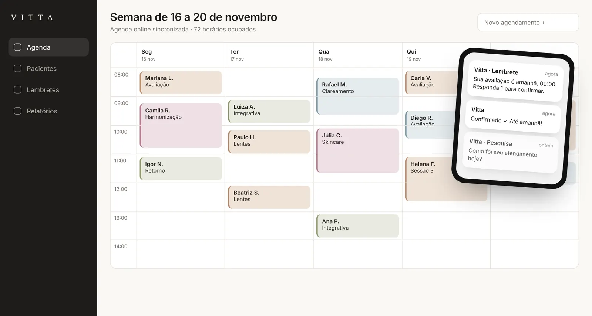
AtivoSaúde · São Paulo, SP
Automação para empresas · desde 2017
Um estúdio brasileiro que conecta site, CRM, WhatsApp e agenda em fluxos que funcionam sozinhos. Dois caminhos, ambos sob medida. Nada de template.
Fluxo recente · Clínica Vitta
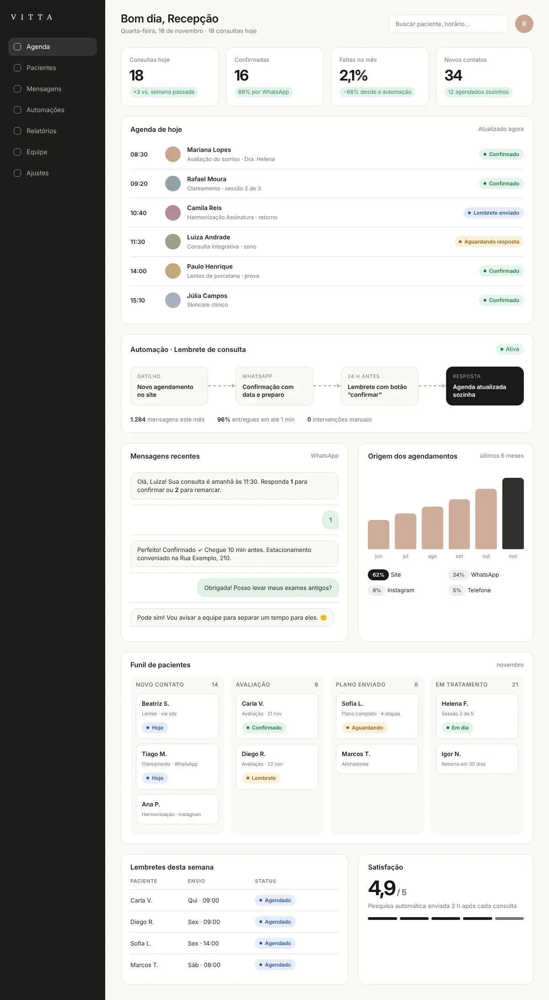
Agenda online, lembretes automáticos e painel da recepção, no ar em quatro semanas. Sem planilha e sem retrabalho.
Confiado por 120+ empresas
Clientes incluem Clínica Vitta, Forma Arquitetura, Trigo & Co, Auto Center Prime, Studio Ritmo, Contábil Norte e outras.
Sites, CRMs, integrações e os fluxos que ligam tudo isso. Área do cliente, agendamentos, lembretes, relatórios e suporte, sob o mesmo teto.
Você tem clientes para atender, uma equipe para liderar e decisões para tomar.
A última coisa de que você precisa é de tarefas repetidas consumindo horas que deveriam ir para o seu negócio.
Vamos resolver issoCasos recentes

AtivoSaúde · São Paulo, SP
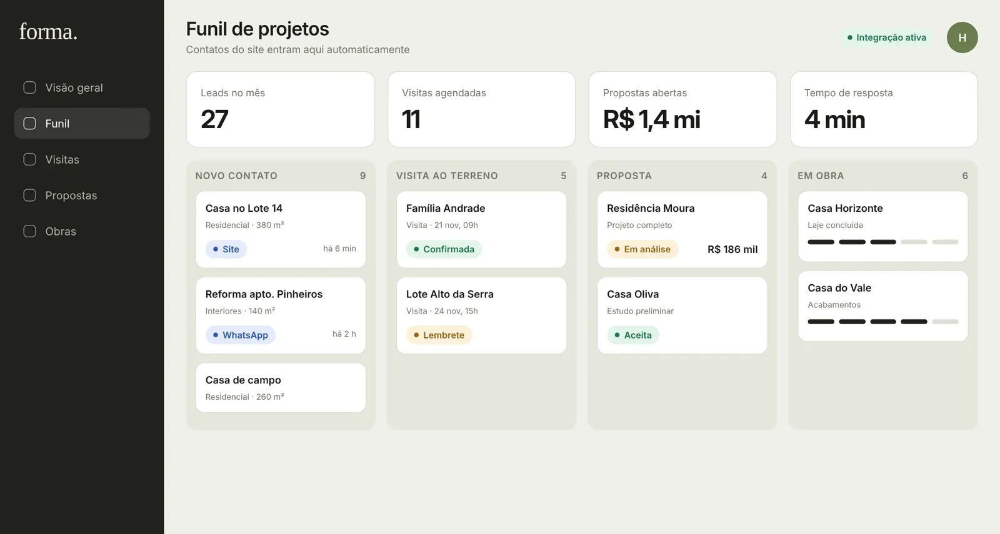
AtivoArquitetura · Campinas, SP
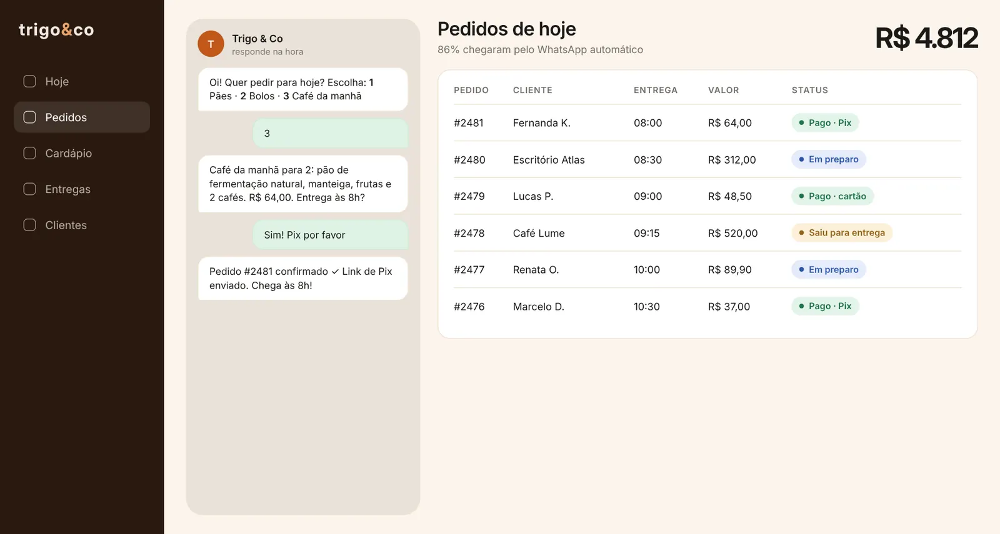
AtivoPadaria · Curitiba, PR
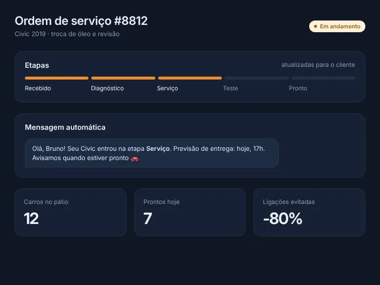
Oficina · Belo Horizonte, MG
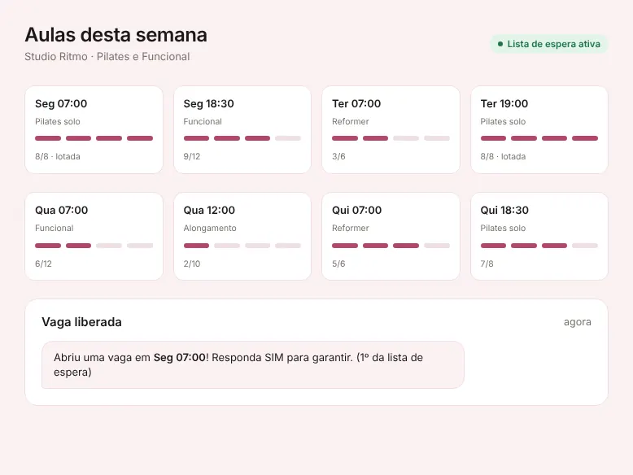
Pilates · Florianópolis, SC
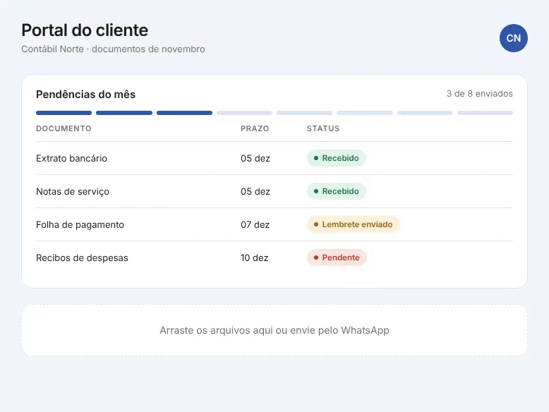
Contabilidade · Recife, PE
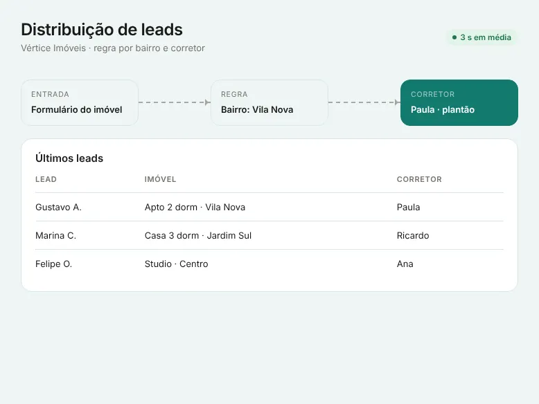
Imobiliária · Goiânia, GO
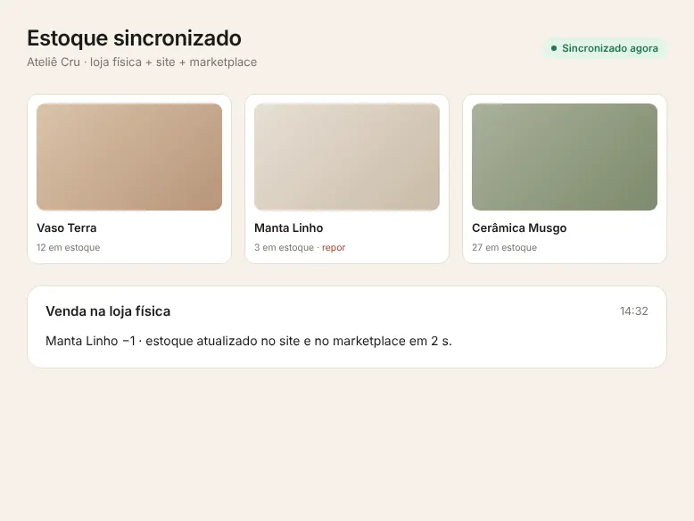
Varejo · Porto Alegre, RS
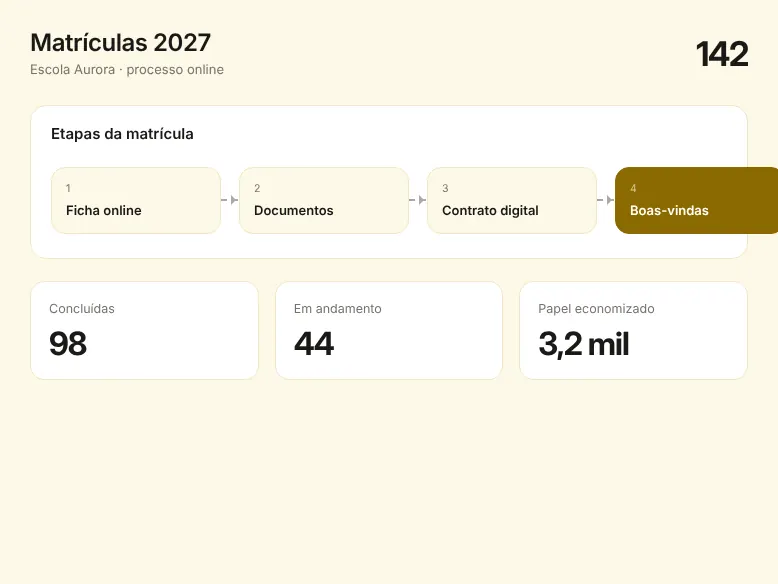
Educação · Salvador, BA
Dois caminhos
Os dois são sob medida e nenhum é template. A diferença está no prazo de entrega e na profundidade da estratégia.
Fluxos validados, ajustados ao seu negócio. Metade do prazo.
Sistema completo, desenhado do zero com a sua equipe.
Pare de perder clientes por demora. Respostas imediatas, triagem automática e passagem para a equipe quando importa.
Saiba mais →Planilha não avisa quando um contato esfriou. O CRM certo avisa, distribui e mostra o que falta para fechar.
Saiba mais →Confirmações, lembretes e remarcações sem ligação. Menos faltas e uma recepção que respira.
Saiba mais →Os números do mês em uma tela, atualizados sozinhos. Sem exportar, colar e conferir.
Saiba mais →Existe uma planilha fazendo o trabalho que um sistema faria melhor. Nós construímos esse sistema.
Saiba mais →Como trabalhamos
Uma conversa com quem faz a operação no dia a dia. Saímos com um mapa das tarefas repetidas e do que dá para automatizar primeiro.
Cada etapa vira um desenho simples: quem faz, quando acontece e o que o sistema assume. Sem jargão técnico.
Montamos uma versão navegável do fluxo para validar mensagens, telas e regras com casos reais.
Integrações seguras, registros de cada ação e alertas automáticos se algo sair do esperado.
Treinamento da equipe, relatório mensal e ajustes contínuos conforme a operação cresce.
120+ operações automatizadas. Brasil inteiro.
Clínicas, escritórios, comércio, serviços e indústria. Fluxos sob medida para cada rotina.
Dois caminhos. Ambos sob medida.
Em mais de 40 cidades, de clínicas a transportadoras.
Desde 2017 construindo automações que a equipe usa de verdade.
Confirmações, lembretes e respostas enviadas sem ninguém digitar.
Notas reais de quem acompanha os resultados todo mês.
Cronograma claro desde o primeiro dia e atualizações toda semana. Você nunca precisa cobrar.
Fluxo no ar é o começo. Seguimos com suporte, melhorias e relatórios mensais.
Conversas honestas sobre o que vale automatizar agora e o que pode esperar. Se não fizer sentido para o seu negócio, a gente fala.
Começamos com um projeto e hoje somos uma equipe de nove pessoas. Mais de 120 operações automatizadas e o mesmo cuidado em cada uma.
Respostas rápidas, triagem e horários de atendimento: o básico que já reduz metade das mensagens manuais.
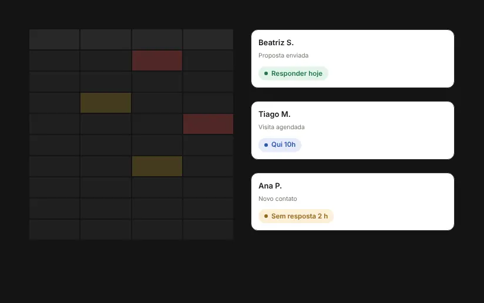
CRMContatos esquecidos, propostas sem retorno e ninguém sabe quem atendeu quem. Veja como decidir.
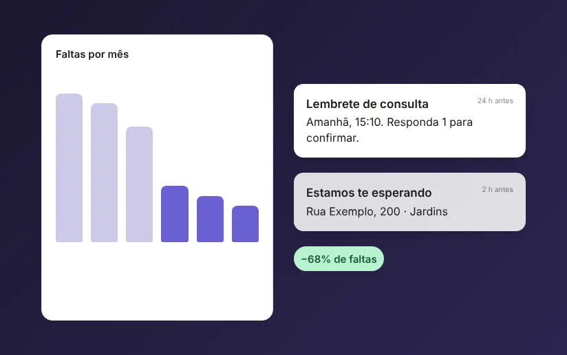
AgendaComparamos seis meses de agenda antes e depois da confirmação automática em três clínicas.
No caminho Essencial, de duas a três semanas. Projetos sob medida variam de seis a doze semanas, com entregas parciais a cada etapa.
Na maioria dos casos, não. Conectamos o que você já tem (site, planilhas, agenda, ERP) e só sugerimos trocas quando a ferramenta limita o resultado.
Sim. Tudo é desenhado para quem opera no dia a dia, e cada entrega inclui treinamento e um guia simples de uso.
Monitoramento dos fluxos, ajustes de mensagens e regras, relatórios mensais e um canal direto com a equipe que construiu o projeto.
Clínicas, escritórios de serviços, varejo, educação, logística e indústria. Se existe tarefa repetida, existe o que automatizar.
Agende uma conversa gratuita de 20 minutos. Sem compromisso e sem jargão: só um diagnóstico honesto do que dá para automatizar.
Veja as 210 avaliações dos nossos clientes